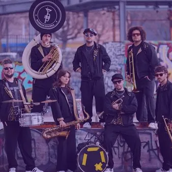

ven 9 ott
Bandakadabra in tour a Trieste
La Bandakadabra è un ensemble di fiati e percussioni unico nel suo genere, capace di affrontare qualsiasi linguaggio musicale con una travolgente carica di energia. Vanta una frenetica attività live che l’ha portata a esibirsi in tutto il mondo e a guadagnarsi una crescente…
 Indicazioni
Indicazioni
- Costi e prenotazioni
- Costo non indicato · Prenotazione non indicata
- Programma
- Programma da verificare. Apri la fonte ufficiale per orari e possibili aggiornamenti.
- In caso di maltempo
- Nessuna indicazione specifica pubblicata.
- Note
- Acquisito automaticamente dalla fonte.
L’EVENTO
Descrizione completa
La Bandakadabra è un ensemble di fiati e percussioni unico nel suo genere, capace di affrontare qualsiasi linguaggio musicale con una travolgente carica di energia. Vanta una frenetica attività live che l’ha portata a esibirsi in tutto il mondo e a guadagnarsi una crescente attenzione da parte dei media e del pubblico. Dai concerti de I Suoni delle Dolomiti , passando per il Festival Internacional de Santa Lucia (Messico) , alle esibizioni al Premio Tenco, e a Musicultura, negli anni ha collaborato e condiviso i palchi con artisti di rilievo, tra cui Vinicio Capossela, Arturo Brachetti, Malika Ayane, Willie Peyote, Samuel, Elisa, Noemi e Luca Carboni.
Si è esibita recentemente durante tre giornate dei Giochi Olimpici Invernali Milano Cortina 2026 e, il 6 aprile, ha partecipato al programma “GialappaShow” (TV8). L’ensemble negli anni ha partecipato a numerose trasmissioni radiofoniche e televisive tra cui: Premio Tenco (Rai 3, 2016), Musicultura (Rai Cultura, 2020), Caterpillar (Rai Radio 2, 2024), Musica Mia (Rai 2, 2025), Paparazz i ( Rai Italia , Rai Play 2025). Alcuni brani hanno ottenuto passaggi radiofonici in Italia e all’estero, in programmi come Battiti (Rai Radio 3), Summer Camp (Radio Deejay), nonché su network internazionali negli Stati Uniti, in Serbia, Svizzera e Germania.
Esibizione prevista il 9 ottobre presso Hangar Teatri alle 20.30.
Ticket acquistabili su LiveTicket.
IL PROGRAMMA
Programma e orari
Appuntamenti raccolti dalle fonti elencate. Dove manca un orario, non è ancora disponibile in questa scheda.
Programma pubblicato
- Dal 2026-10-09 al 2026-10-09
INFORMAZIONI UTILI
Prima di partire
- Controllare la fonte prima di partire.
ORGANIZZAZIONE